ANIMAIS Em Harvest Moon: Back to Nature todos os animais tem uma pontuação de afeto escondida. A quantidade maxima de pontos de afeto de qualquer animal que ele pode chegar é 255 e para cada 25 pontos acrescenta um coração a mais. Você pode ver o nivel de coração para cada um de seus animais quando apertar "START". Apenas a primeira ação que voce faz todo o dia neste jogo aumentará o nivel de afeto deles. Isso quer dizer, por exemplo, que se você escovar seu animal uma vez seu afeto aumentará. Se você continuar a escovar esse animal muitas vezes no mesmo dia você estará perdendo seu tempo por que não terá efeito no nivel de afeto deles. Os novos pontos de afeto que voce adquiri, escovando ou falando com seus animais não adiciona ao total até o começo do dia seguinte. A única exceção para essa regra é se você atacar seu animal com uma ferramenta como um machado. Isto imediatamente baixará seu afeto e você pode repetidamente ataca-los e repetidamente seu nivel de afeto vai diminuir sem ter que esperar até o começo do próximo dia. 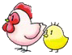 CACHORRO 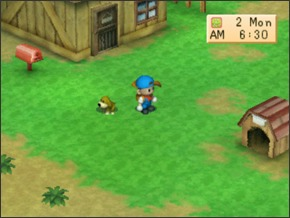 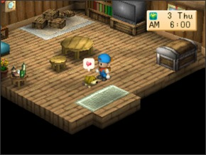 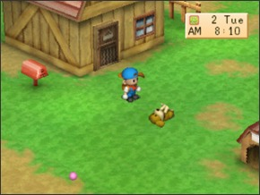 ᐅVocê começará com um cachorro e ele começa com 10 pontos de afeto. As seguintes ações afetam os pontos de afeto do seu cachorro: AÇÕES PONTOS DE AFETO POR DIA Pegar ele e coloca-lo no chão +2 de afeto Assobiar para ele e ter sua resposta +2 de afeto Ignorar ele completamente todo dia -1 de afeto Deixar ele fora da casa na chuva, neve, tufão ou em uma nevasca durante a noite -5 de afeto Atacar seu cachorro com uma ferramenta -10 de afeto Seu cachorro também tem um segundo estatus de inteligência escondida neste jogo que começa em 0(zero) e nunca diminui. quando ele se torna um adulto você será capaz de comprar uma bola que você pode usar para brincar com seu cachorro. Se você jogar a bolinha, o cachorro late, pega a bola e devolve pra você, sua inteligencia subira 3(três) pontos. A inteligência do seu cachorro so podera subir três pontos por dia não importa quantas vezes você jogue a bolinha. Quanto mais alto a inteligência do seu cachorro melhor o desempenho dele no festival da corrida dos cachorros. CAVALO 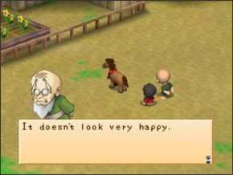 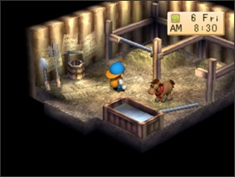 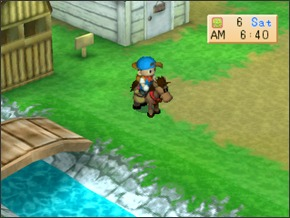 ᐅDurante a primavera do primeiro ano em Harvest Moon: Back to Nature você pode visitar o Yodel Ranch e receber um cavalo. O cavalo começa com 10(dez) pontos de afeto.As seguintes ações afetam os pontos de afeto do seu cavalo. AÇÕES PONTOS DE AFETO POR DIA Assobiar para ele e ter sua resposta +2 de afeto Escova-lo +2 de afeto Não escova-lo, assobiar ou montar nele o dia inteiro -1 de afeto Atacar ele duas vezes -1 de afeto Atacar ele mais uma vez depois de ter atacado duas vezes -1 de afeto Ter um cão selvagem latindo para ele duas vezes -1 de afeto Ter um cão selvagem latindo para ele depois de ter latido duas vezes -1 de afeto Deixar ele fora do estabulo na chuva, neve, tufão ou em uma nevasca durante a noite -5 de afeto Falar com seu cavalo não terá efeito em seu nivel de afeto. Seu cavalo tem um estatus de stamina escondido neste jogo. Sua stamina começa em 0(zero) e nunca diminui. Quando seu cavalo se torna um adulto você estará pronto para montar nele. Toda vez que você pula em cima dele sua stamina subirá 3(três) pontos. Sua stamina só aumentará uma vez por dia não importa quantas vezes você monte nele. Quanto mais alto a stamina de seu cavalo, melhor será seu desempenho no festival de corrida de cavalos. Você nunca vai precisar alimentar seu cavalo. Você também pode usar seu cavalo como entregador ambulante, quando ele se tornar um adulto jogue itens dentro de suas bolsas que fica dos lados da sela. Estes itens serão enviados como todos os outros. A ideia é que seu cavalo leva os itens para caixa de entrega pra você. Se seu cavalo não tem um total de 8(oito) corações no fim do primeiro ano, Barley virá e levará ele embora. Leva no mínimo 60 dias para que seu cavalo consiga um coração do nivel 10(dez). Leva no mínimo 85(oitenta e cinco) dias para que seu cavalo consiga a stamina maxima. Galinhas 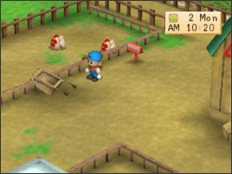 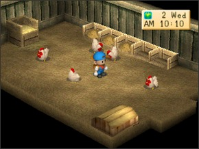 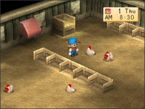 ᐅVocê pode comprar galinhas de Poultry Farm por 1.500g cada. Galinhas começam com 10(dez) de pontos de afeto e as seguintes ações afetam seu niveis de afeto: AÇÕES PONTOS DE AFETO POR DIA Alimentar elas +10 de afeto Atacar um galinha com uma ferramenta -10 de afeto Se um cão selvagem latir nela -10 de afeto Esquecer de alimentar uma galinha -20 de afeto Deixar ela fora do galinheiro na chuva, neve, tufão ou em uma nevasca durante a noite -120 de afeto Leva no mínimo 24(vinte e quatro) dias para que a galinha alcance o coração de nivel 10(dez). Você pode comprar ração para suas galinhas na Poultry Farm. Uma unidade de ração de galinha custa 10g. Você também pode jogar milho no moinho para ter uma unidade de milho convertida em 10 unidades de ração de galinha. Se você deixar suas galinhas fora então não precisa alimenta-las. Você também pode colocar ração de galinha em qualquer baia contanto que você coloque a mesma quantidade de galinhas que você tiver no galinheiro. Por exemplo se você tem duas galinhas você pode colocar a ração na baia 2 ou 5, não importa. Depois de você comprar uma galinha em Harvest Moon: Back to Nature não há necessidade de comprar outra. Você pode colocar um ovo na incubadora e depois de 3(três) dias ele chocará. Depois de mais nove dias o pinto crescerá e virará uma galinha adulta. Galinhas botam ovos quando elas tem ao menos 1(um) coração ou 25(vinte e cinco) pontos de afeto. Se você esquecer de alimentar uma galinha então ela não botará ovos por nos próximos dois dias. Se sua galinha ganha o Festival da Galinha então elas começarão a colocar ovos de ouro. Você também pode ir para Saibara para fazer uma Máquina de Maionese. Você pode colocar ovos dentro da Máquina de Maionesse e adquirir pequena, média, grande ou Maionese de ouro com base em quão alto estão o nivel de coração das suas galinhas. Quanto maior o nivel de coração das galinhas, você terá a melhor Maionese. Ovos de ouro viram Maionese de Ouro. PRODUTOS DA GALINHA PREÇO DE VENDA Ovo 50G Ovo de Ouro 150G Maionese Pequena 100G Maionese Média 150G Maionese Grande 200G Maionese de Ouro 300G Ovelhas 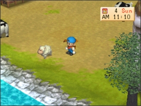 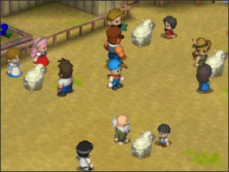 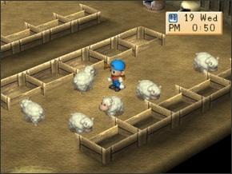 ᐅVocê pode comprar uma ovelha por 4.000g no Yodel Ranch. A ovelha começa com 10(dez) pontos de afeto e as seguintes ações afetam seus niveis de afeto: AÇÕES PONTOS DE AFETO POR DIA Falar com sua ovelha +3 de afeto Deixar sua ovelha comer grama fora do celeiro +2 de afeto Alimentar sua ovelha no celeiro -1 de afeto Um cacnhorro selvagem latir na sua ovelha -1 de afeto Deixar sua ovelha fora do celeiro sem grama alta para comer -9 de afeto Esquecer de alimentar sua ovelha quando ela está dentro do celeiro -10 de afeto Deixar ela fora do celeiro na chuva, neve, tufão ou em uma nevasca durante a noite -120 de afeto Escovar sua ovelha e cortar sua lã não tem nenhum efeito em seu nivel de afeto bastante estranho. Leva no mínimo 48(quarenta e oito)dias para sua ovelha alcançar o coração de nivel 10 mas isto novamente requer clima perfeito e um campo com bastante grama.Um mínimo de 60 dias para alcançar o nivel maximo de coração é uma quantidade de tempo muito mais provável. Se você der sua ovelha a poção da gravidez neste jogo ela levará 21(vinte e um) dias para uma nova ovelha nascer. Cordeiros levam um total de 15 dias para atingir a maturidade de uma ovelha adulta que pode ter sua propria lã cortada. Leva no mínimo 7(sete) dias para uma ovelha voltar a crescer sua lã depois de ter sido cortada e se você esquecer de alimentar sua ovelha você estará pronto para corta-la de volta em um dia. Novamente você pode colocar ração em qualquer baia contanto que há muitas unidades de ração de acordo com sua quantidade de ovelhas. Se sua ovelha ganha o Festival da Ovelha ela começará a dar lã de ouro. Você pode ir para Saibara para fazer a Máquina de Novelo onde você pode produzir novelo de sua lã da ovelha no qual pode vender por muito mais. PRODUTOS DA OVELHA PREÇO DE VENDA Lã Pequena 100G Lã Média 400G Lã Grande 500G Lã de Ouro 600G Novelo Pequeno 300G Novelo Médio 700G Novelo Grande 800G Novelo de Ouro 1000G Vacas 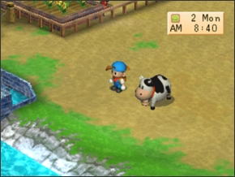 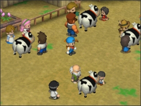 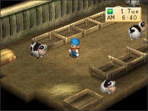 ᐅVocê pode comprar uma vaca por 6.000g no Yodel Ranch. Vacas começam com 10(dez) de pontos de afeto e as seguintes ações afetam seus niveis de afeto: AÇÕES PONTOS DE AFETO POR DIA Falar com sua vaca +3 de afeto Deixar sua vaca comer grama fora do celeiro +2 de afeto Alimentar sua vaca no celeiro +1 de afeto Deixar sua vaca fora do celeiro sem grama alta para comer -9 de afeto Esquecer de alimentar sua vaca quando ela está dentro do celeiro -10 de afeto Atacar uma vaca com uma ferramenta -10 de afeto Um cacnhorro selvagem latir na sua vaca -10 de afeto Deixar ela fora do celeiro na chuva, neve, tufão ou em uma nevasca durante a noite -120 de afeto Escovar ou tirar leite das suas vacas não tem efeito em seu nivel de afeto por algum motivo estranho. Leva no mínimo 48 dias para sua vaca ter 10(dez) corações mas isto requer clima perfeito constante e campo com bastante grama. 60(sessenta)dias é a quantidade minima de tempo muito mais provável para alcançar o nivel maximo de coração. Uma vaca gravida neste jogo leva 21(vinte e um) dias pra parir um bezerro. O bezerro leva 15 dias para crescer em uma vaca imatura e depois mais uns 14 dias para alcançar a maturidade de uma vaca adulta. Por causa disso leva muito tempo e por causa das vacas gravidas não darem leite eu recomendo comprar todas as suas vacas. Você não terá que comprar a poção da gravidez ou perder o leite enquanto a vaca está gravida. Você pode colocar forragem em qualquer caixa de alimentação no celeiro contanto que tenha muitas unidades igual a quantidade de sua vacas. Se você esquecer de alimentar sua vaca ela não dará leite por 2(dois) dias. Se sua vaca ganha o Festival da Vaca ela começará a dar leite de ouro. Você também pode ir para Saibara para fazer a Máquina de Queijo no qual precisará do leite de suas vacas e produzirá queijo no qual vende muito mais que o leite. PRODUTOS DA VACA PREÇO DE VENDA Leite Pequeno 100G Leite Médio 150G Leite Grande 200G Leite de Ouro 300G Queijo Pequeno 300G Queijo Médio 400G Queijo Grande 500G Queijo de Ouro 600G Olá! Bem-Vindo!